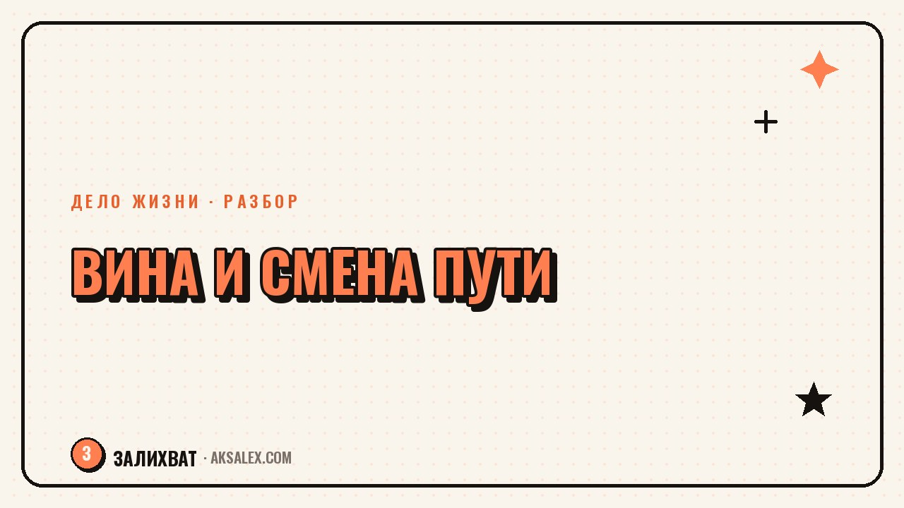

Чувство вины при смене профессии: как отпустить

Ты наконец решилась уйти со стабильной работы к тому, что действительно хочешь делать - и вместо облегчения приходит вина. Перед родителями, которые гордились дипломом. Перед коллегами, которых «бросаешь». Перед собой пятилетней давности, которая столько лет строила эту карьеру. Вина при смене профессии - частая спутница перемен, и разобраться, откуда она растёт, помогает перестать таскать её с собой как доказательство, что решение неправильное.
Откуда берётся вина, если решение кажется правильным
Вина обычно сигналит о нарушении какого-то правила. Проблема в том, что правило «нельзя менять профессию» часто не твоё собственное, а унаследованное - от семьи, где ценили стабильность, от культуры, где смена пути читается как несерьёзность, от собственного прошлого «я» которое вложило годы в диплом и опыт.
Отдельный источник вины - люди, которых решение задевает напрямую: коллеги, с которыми строила проекты, руководитель, который в тебя инвестировал время на обучение. Их реальное разочарование - это их чувства, а не доказательство твоей неправоты. Ты можешь сожалеть, что расстраиваешь кого-то, и при этом быть уверенной в своём решении - это два разных чувства, которые не обязаны отменять друг друга.
Вина - это не всегда сигнал, что ты сделала что-то плохое. Иногда это просто эхо чужих правил, которые ты случайно приняла за свои.
Вина vs сожаление: в чём разница
Полезно различать два похожих, но разных чувства. Сожаление - это «мне жаль, что так получилось, но я выбираю этот путь». Вина - это «я плохая, потому что так поступила». Первое можно носить спокойно, оно не требует наказания. Второе требует - и человек неосознанно начинает себя наказывать: лишней тревогой, недоверием к собственному решению, постоянными перепроверками «а правильно ли я сделала».
Как перевести вину в сожаление
- Назови вслух или письменно, что именно жаль терять - конкретный коллектив, стабильный доход, статус.
- Отдели это от вопроса «правильно ли я поступаю» - можно жалеть о потере и одновременно быть уверенной в решении.
- Разреши себе грустить о закрывшейся главе без того, чтобы это грозило откатом назад.
Что реально помогает отпустить вину
Во-первых, честно спроси себя: если бы на моём месте была подруга с такой же историей, я бы считала её виноватой за смену пути? Обычно ответ - нет, мы судим себя строже, чем других, по тем же самым поступкам. Это простое упражнение сдвигает перспективу быстрее, чем попытка убедить себя логическими доводами.
Во-вторых, перестань отчитываться за решение перед всеми, кто спрашивает «а не жалко бросать». Короткий нейтральный ответ без оправданий («у меня новый план, мне интересно») снимает часть давления - не нужно защищать выбор перед каждым, кто решил высказаться.
В-третьих, дай себе время привыкнуть к новой идентичности. Вина часто сильнее всего в первые месяцы, когда старая профессиональная роль ещё не отпустила, а новая ещё не укрепилась. Это переходное состояние, а не постоянный диагноз - оно проходит само, если не подпитывать его самобичеванием.
Сравнение: что усиливает вину и что её снимает
| Усиливает вину | Снимает вину |
|---|---|
| Постоянные объяснения каждому встречному | Короткий нейтральный ответ без оправданий |
| Сравнение себя с прошлым «стабильным я» | Признание, что ценности и приоритеты меняются |
| Молчаливое ожидание одобрения близких | Прямой разговор о своих страхах и мотивах |
| Чтение чужих историй успеха как эталона | Фокус на своём темпе и своих результатах |
Когда вина - сигнал, а не просто привычка
Бывает и обратная ситуация: иногда чувство вины действительно подсказывает что-то важное - например ты уходишь не к тому, что хочешь, а просто сбегаешь от текущих трудностей, не разобравшись в себе. Отличить это можно по одному вопросу: вина про отношение к людям («я подвожу команду посреди важного проекта») или про сам факт перемен («я вообще не имею права что-то менять»).
Первый случай решается практически - можно доработать до удобной точки, передать дела, закрыть долги перед командой. Второй случай - это не про практику, а про разрешение себе на перемены в принципе, и его решает не логика, а время и постепенное привыкание к новой роли.
Частые вопросы
Почему при смене профессии появляется чувство вины?
Вина чаще всего связана с чужими правилами о стабильности, которые ты приняла за свои - от семьи, культуры или прошлого опыта. Она не означает, что решение неправильное, а скорее показывает, что ты нарушаешь привычный сценарий.
Как отличить вину от сожаления при смене пути?
Сожаление - это «мне жаль терять что-то», а вина - «я плохая за этот выбор». Сожаление можно спокойно пережить, а вина требует наказания самой себя, и именно её полезно учиться отпускать.
Что делать, если близкие расстроены сменой профессии?
Признай их чувства без того, чтобы брать на себя ответственность за них. Можно сожалеть, что расстраиваешь кого-то, и одновременно быть уверенной в своём решении - это разные вещи, которые не обязаны отменять друг друга.
Сколько проходит чувство вины после смены профессии?
Обычно острее всего вина ощущается в первые несколько месяцев, когда старая роль ещё не отпустила, а новая не укрепилась. Это нормальное переходное состояние, которое слабеет само, если не подпитывать его постоянным самобичеванием.
Как понять, что вина - это важный сигнал, а не просто привычка?
Если вина связана с конкретными людьми и незакрытыми обязательствами - это практический вопрос, который можно решить. Если она про сам факт перемен в принципе - это уже не про логику, а про разрешение себе на новый путь.
Раз тема оказалась полезной, вот что почитать следующим. Родители против твоего выбора дела? Разбираем, откуда это и как двигаться, не разрывая отношения.
Читать статью →а не вручную